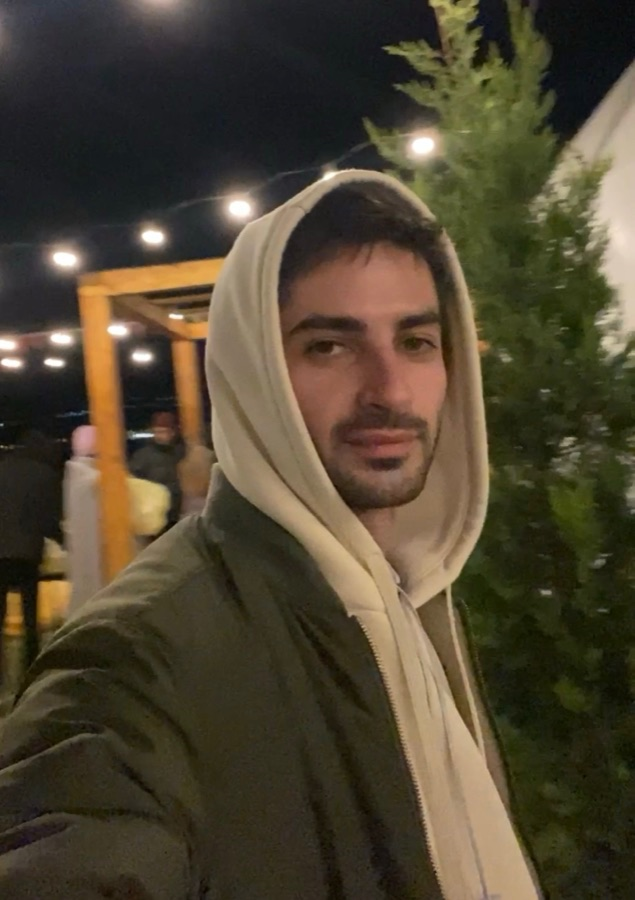

Автор
Сергей Донсков
Задизайнил и «наклодил» Winnie: придумал, нарисовал интерфейс и собрал приложение в паре с Claude.
Сделал для себя и своих задач — чтобы перевести фразу, что-то найти или поставить напоминание, не открывая браузер. Код открыт под лицензией MIT: если пригодится и вам — пользуйтесь. Идеи и найденные ошибки присылайте на почту.